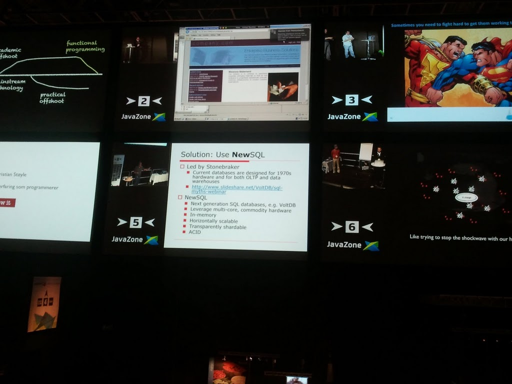
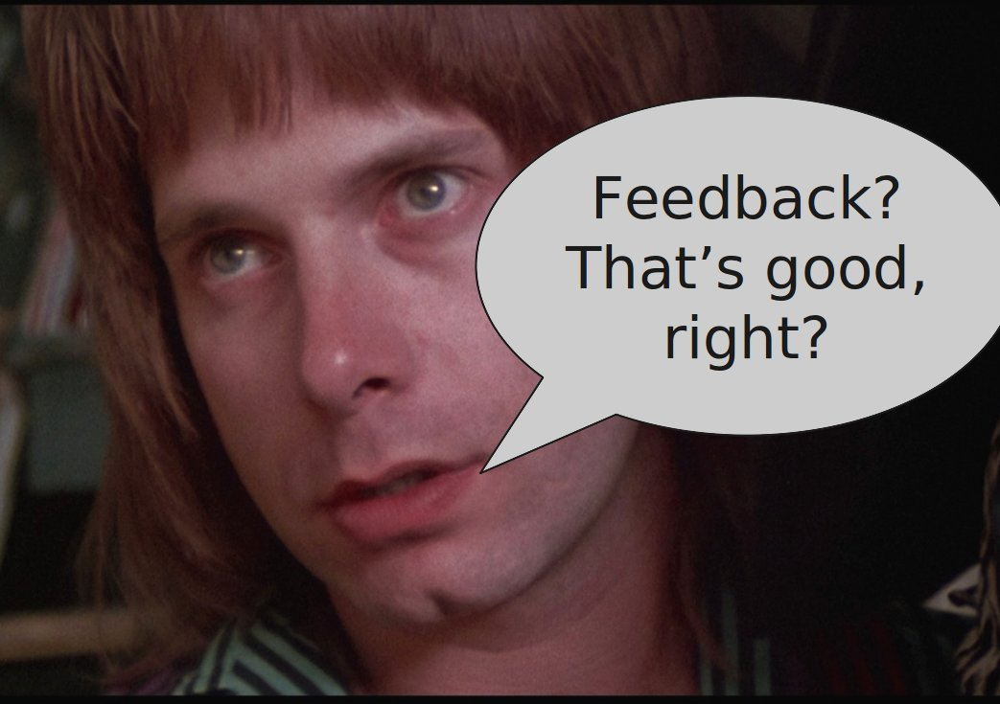

This presentation is an HTML5 website
Presentation template from http://html5rocks.com/
Press Right arrow and Left arrowto navigate.

Knut Haugen A-pressen digitale medier

#define _ -F<00||--F-OO--;
int F=00,OO=00;main(){F_OO();printf("%1.3f\n",4.*-F/OO/OO);}F_OO()
{
_-_-_-_
_-_-_-_-_-_-_-_-_
_-_-_-_-_-_-_-_-_-_-_-_
_-_-_-_-_-_-_-_-_-_-_-_-_-_
_-_-_-_-_-_-_-_-_-_-_-_-_-_-_
_-_-_-_-_-_-_-_-_-_-_-_-_-_-_
_-_-_-_-_-_-_-_-_-_-_-_-_-_-_-_
_-_-_-_-_-_-_-_-_-_-_-_-_-_-_-_
_-_-_-_-_-_-_-_-_-_-_-_-_-_-_-_
_-_-_-_-_-_-_-_-_-_-_-_-_-_-_-_
_-_-_-_-_-_-_-_-_-_-_-_-_-_-_
_-_-_-_-_-_-_-_-_-_-_-_-_-_-_
_-_-_-_-_-_-_-_-_-_-_-_-_-_
_-_-_-_-_-_-_-_-_-_-_-_
_-_-_-_-_-_-_-_
_-_-_-_
}